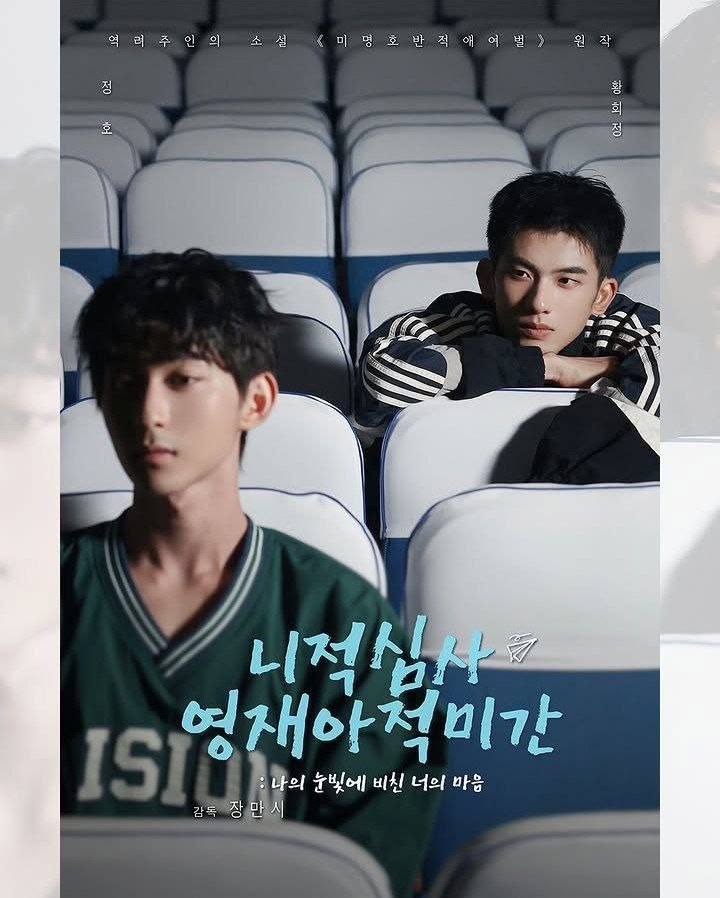
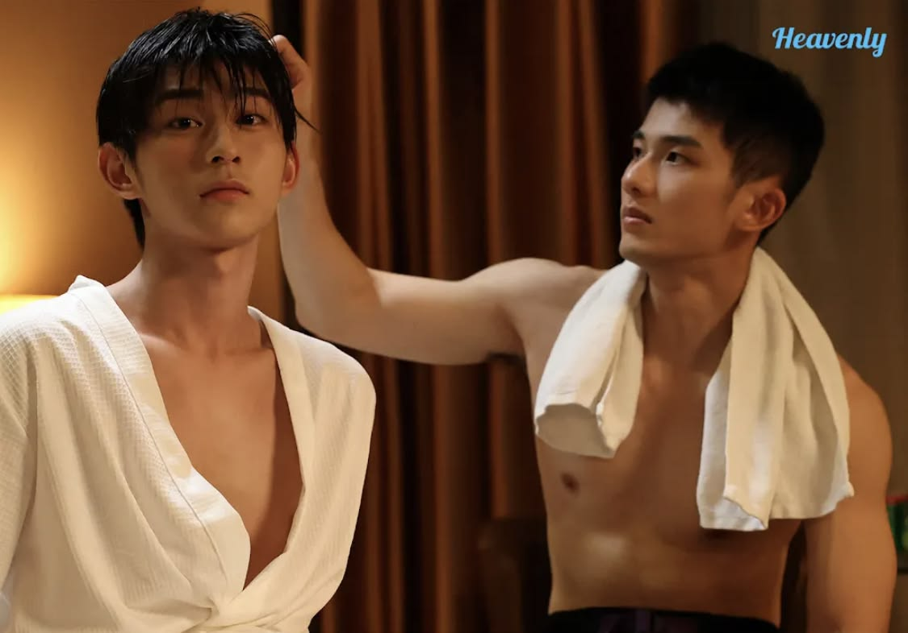
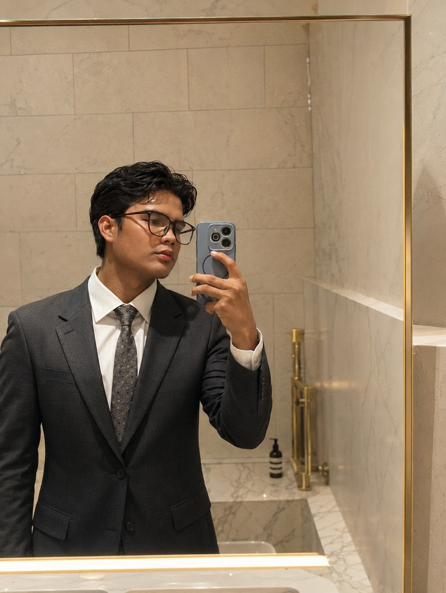
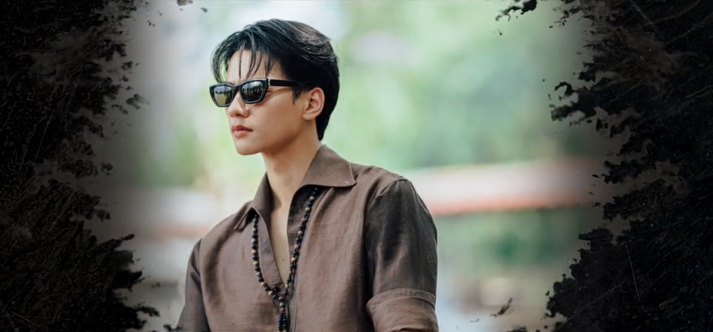
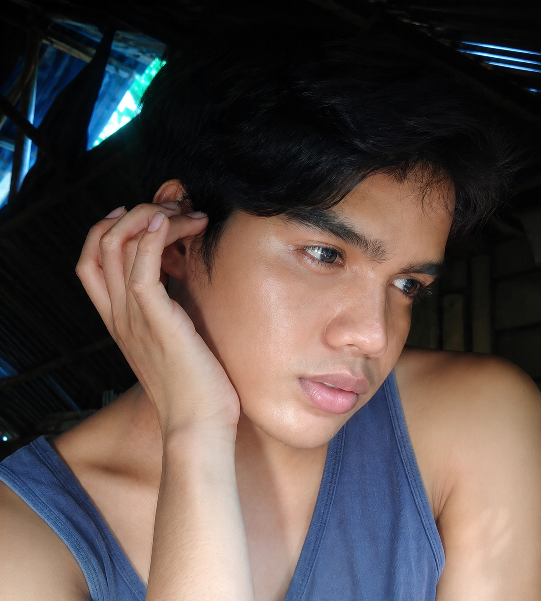

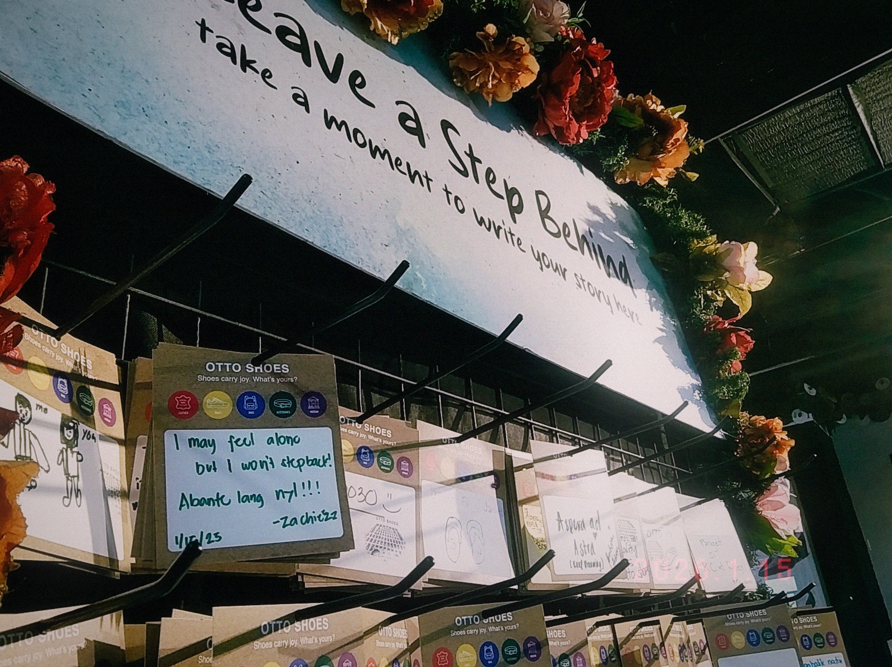







Stories that left a permanent mark on my heart. Watch at your own risk.
Hong Kong • 1998
A timeless classic that brilliantly captures the raw reality of the queer experience. It beautifully, yet painfully, illustrates how loving someone deeply isn't always enough to maintain a relationship when faced with complex realities. Created in 1998, the film was decades ahead of its time, showcasing exceptional writing and a stunning visual aesthetic that still holds up masterfully today.
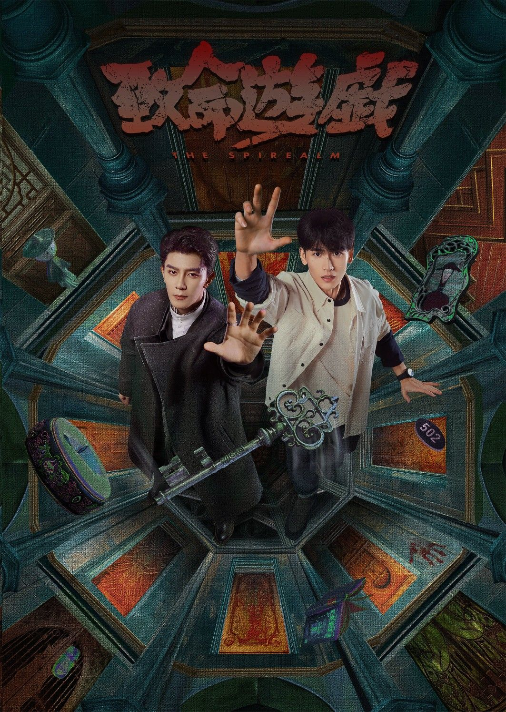
China • 2023
I don't usually get emotional watching dramas, but The Spirealm completely broke me. Because it’s a Chinese adaptation, the main leads (played by Xia Zhiguang and Huang Junjie) can’t have an explicit romance, so their incredible chemistry is built entirely through subtle gestures, protective glances, and silent devotion. It makes you lean in and feel every bit of their bond. But what truly made me go numb was the sheer tragedy of the supporting cast. Watching three of the players' closest friends die back-to-back inside the game felt like a physical blow. Li Dongyuan getting stabbed just to save the main cast, Tan Zaozao giving her final, heart-wrenching speech in the bathroom right before her death, and Chen Qianli dying over a devastating misunderstanding with his twin brother... it was completely heartbreaking. For someone who rarely cries at shows, seeing this found family sacrifice everything for each other left me staring at a black screen, completely teary-eyed and empty.
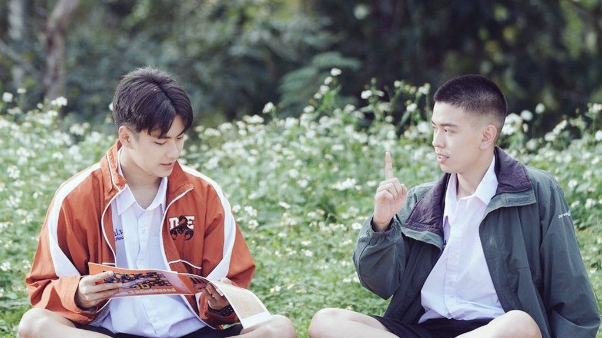
Thailand • 2019
This film left my heart completely aching because of its tragic ending. Even with the profound beauty of their reincarnation—returning in a timeline and in the exact bodies they had once hoped for, where loving each other is finally free from hardship—I still find myself deeply saddened by their previous era. The pain of what they went through back then lingers. It perfectly reflects the real-life struggles of gay people, capturing a deep, genuine love that society unfortunately still tries to view as abnormal.
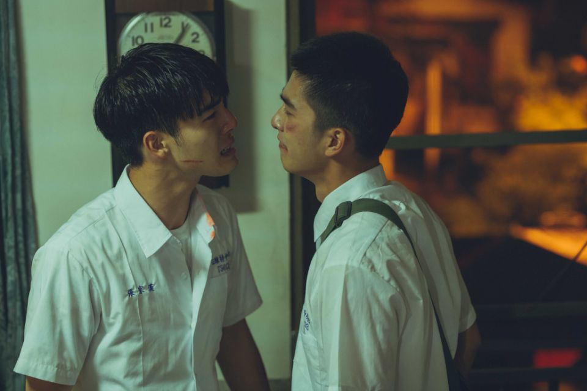
Taiwan • 2020
Your Name Engraved Herein is such a painfully beautiful story. I kept holding onto hope for a happy ending, but reality had other plans. Knowing that the film depicts the writer's actual life story adds a layer of raw, heartbreaking truth to every scene. It is deeply painful to watch the person who was once your everything move on to live a completely separate life. It leaves you with the crushing awareness that the intimate kiss they shared on the beach ultimately changed nothing; the shared memories will linger forever, but the heart that once beat so wildly for that love no longer works.
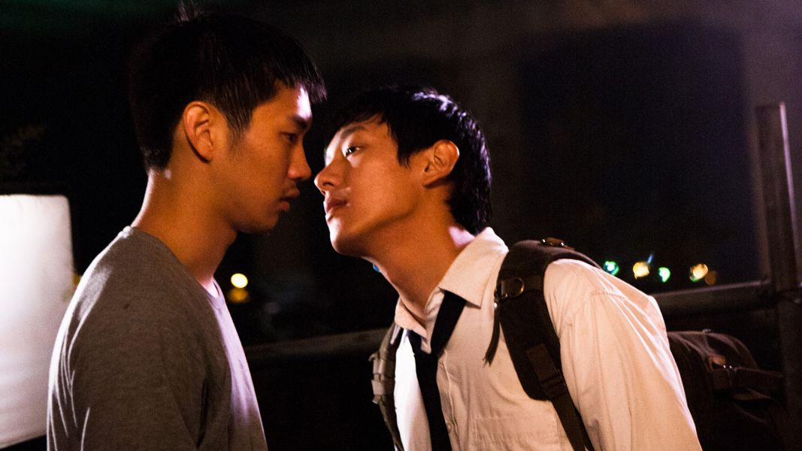
South Korea • 2014
I always thought that classic or older Korean BL films were destined to end in the most tragic ways—with characters dying, being killed, or forced to marry and start traditional families. Night Flight is beautifully different. It masterfully explores how a seemingly straight person develops a deep, romantic relationship with his admirer amidst a harsh and unforgiving high school environment. Beyond the romance, the film tackles the profound importance of building a humane society—one where negativity is stripped away, and diverse sexual orientations are valued and respected. The emotional weight this drama carries is intense; if you are an emotional person, it will easily make you cry. Every element was executed perfectly—from the stellar actors and raw script to the brilliant flow of the story. Most importantly, it breaks the tragic cycle: the main characters do not die. Instead, the curtains close on a note of resilient hope, leaving them to figure out the rest of their lives, together.
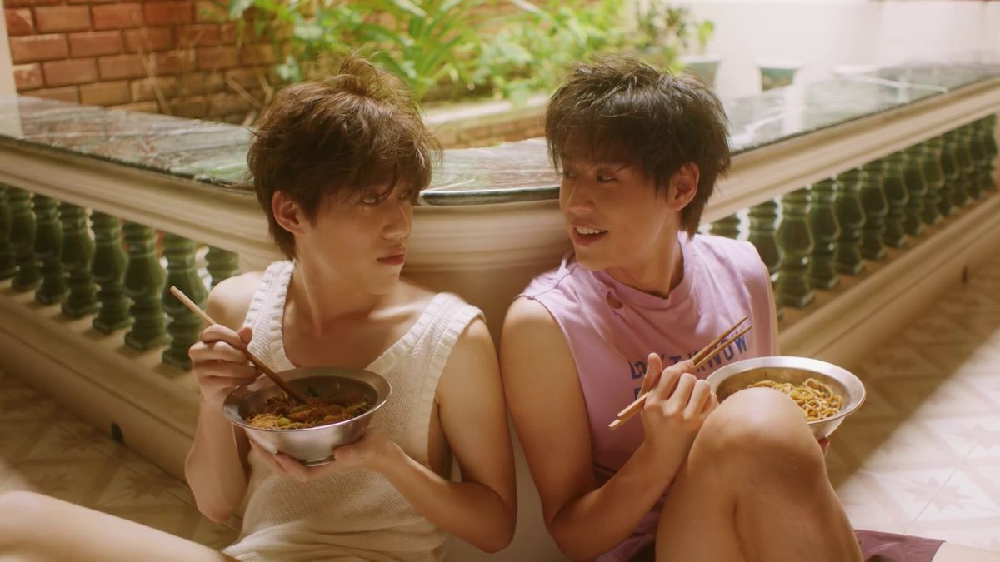
Thailand • 2020
I Told Sunset About You is a masterclass in coming-of-age queer cinema. It beautifully captures the agonizing, raw reality of first love, where confusion and societal expectations collide. It doesn't shy away from the painful side of loving someone—portraying the suffocating weight of jealousy, the fear of self-acceptance, and the heartbreak of family pressure. What makes this show incredible is its breathtaking visual storytelling. It utilizes a gorgeous, nostalgic color palette—heavy with deep red and blue symbolism—and an intimate script that makes your heart ache with every unsaid word. It is a deeply moving, cinematic experience that perfectly respects the true, complicated, and sometimes painful nature of queer youth, proving that the journey to love is rarely effortless.
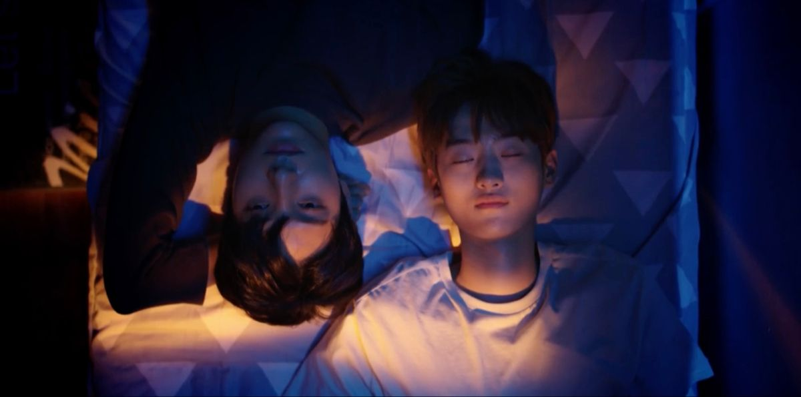
South Korea • 2023
The Eighth Sense completely redefined what a modern Korean BL can be. It is an intensely raw and breathtakingly cinematic series that dives deep into the realities of mental health, trauma, and the sheer terror of opening your heart when you are drowning in your own darkness. What I love most is how the characters defy the usual dynamics; despite being the more timid "country boy," Ji Hyun's love becomes a fiercely resilient anchor for Jae Won as he battles depression and grief. The visual aesthetic is stunning, using the ocean and surfing as a gorgeous metaphor for navigating life's unpredictable waves. It is a beautifully heavy, realistic, and emotional journey that makes your heart ache, but ultimately rewards you with a healing, profound sense of hope as they choose to face the world together.
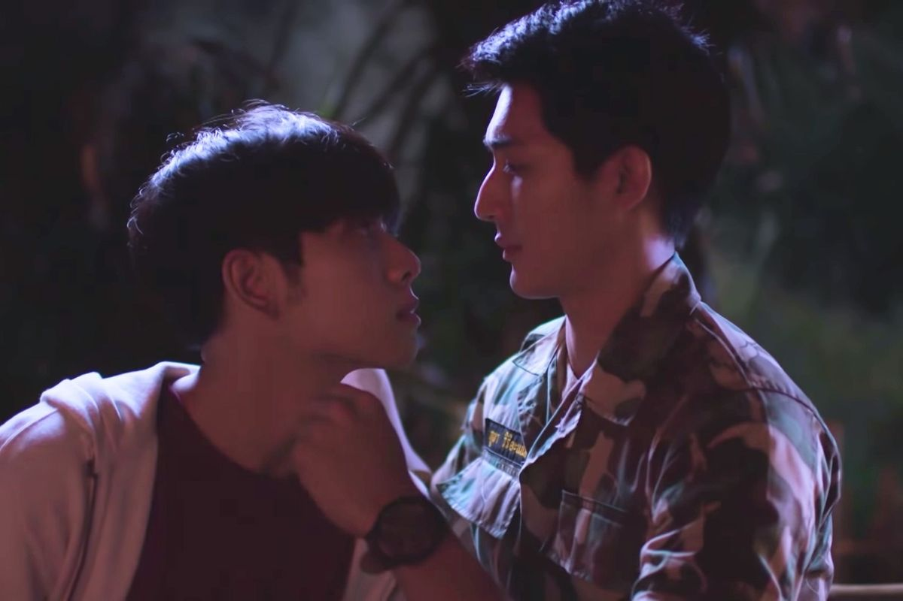
Thailand • 2021
A Tale of Thousand Stars beautifully illustrates how a massive shift in circumstances can completely change the way we look at the world and how we act. We see this transformation through the main character, a wealthy, arrogant city boy who receives a second chance at life and later becomes a volunteer teacher in a remote province of Thailand. The series goes far beyond romance; it highlights a deep love for community and the importance of protecting less privileged people by sharing knowledge. This is especially true when powerful, corrupt groups attempt to exploit the local farmers and their crops. It proves that even if someone has a reckless or flawed past, it doesn't mean they are incapable of changing for the better. Ultimately, this BL series is an absolute masterpiece that brilliantly balances and contrasts the harsh realities of city life with the raw, grounded beauty of the province.
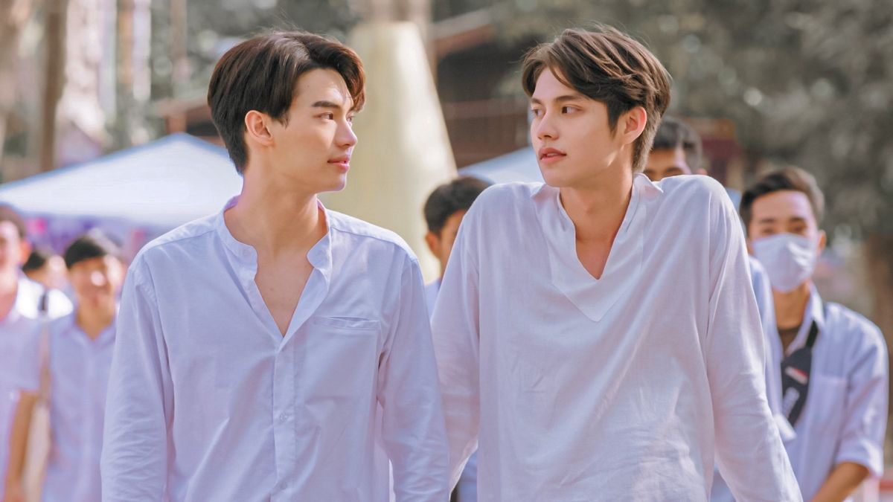
Thailand • 2020
While much of my collection focuses on the heavy, bittersweet, and raw realities of queer cinema, 2gether: The Series holds a special place as a pure, feel-good classic. It takes the classic "fake dating" trope and turns it into a masterclass of romantic comedy, following the addictive dynamic between a popular campus musician and a persistent student. What makes this series stand out is its comforting, bright, and effortless energy. It provides a much-needed breath of fresh air—proving that queer stories don't always have to end in heartbreak or heavy societal trauma to be impactful. With its iconic guitar soundtrack, memorable humor, and lighthearted charm, it is a comforting masterpiece that shows the bright, joyful, and sweet side of falling in love.
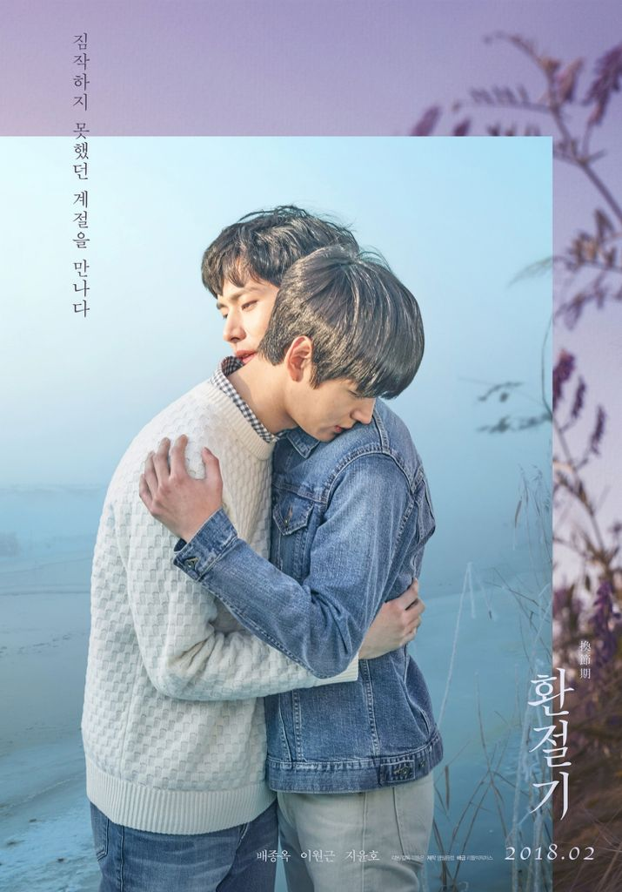
South Korea • 2018
In Between Seasons is a quiet, devastatingly beautiful masterpiece of Korean queer cinema. It breaks away from typical romance tropes to explore the heavy, quiet agony of devotion during a tragedy. Following a catastrophic car accident that leaves one of the main characters in a long-term coma, the film focuses on the raw reality of his boyfriend staying by his side to care for him in the hospital. It is a profoundly moving look at love under the heaviest circumstances, beautifully portraying how a queer relationship navigates not only a medical crisis but the painful reality of a mother discovering her son's hidden truth. It is an unforgettable tear-jerker that captures the true meaning of staying together through the darkest seasons of life.
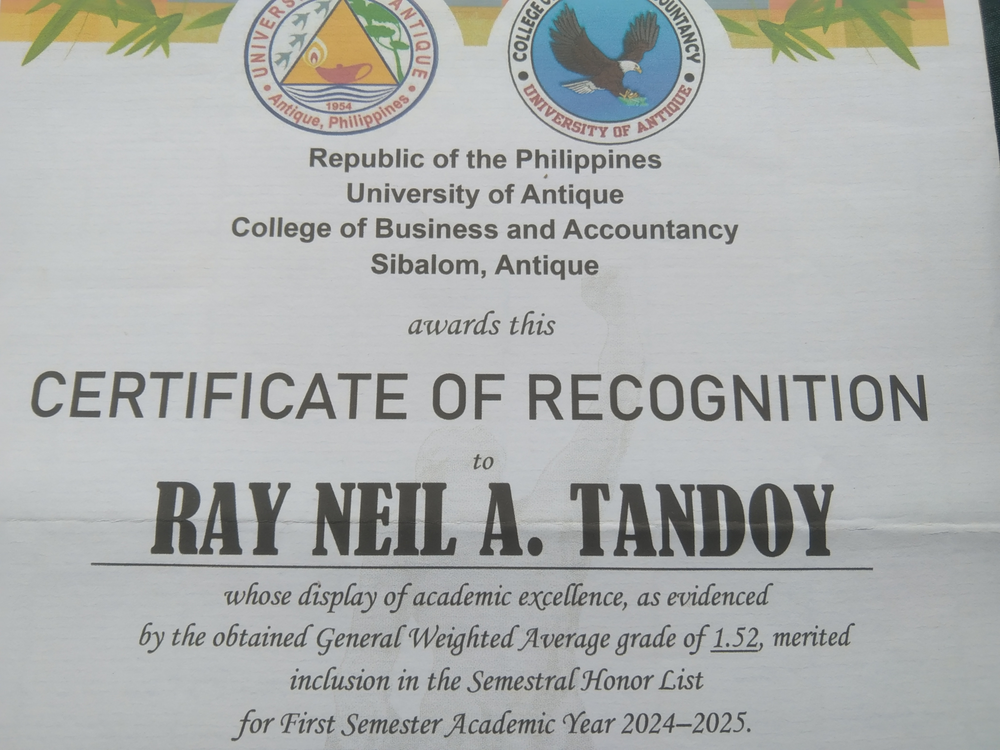
Felt like my hardwork paid off when I was one of the Dean's Lister in our class, last year, 1st Semester of the school year 2024-2025.
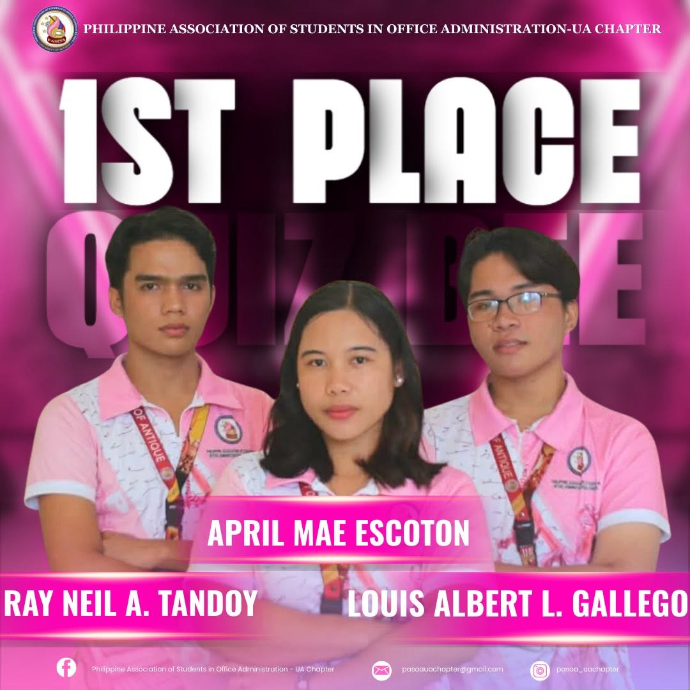
3 great minds combined together that made us the Champion in Quiz Bee, a sureal feeling and mixed of emotion to win representing my beloved section, 2B.
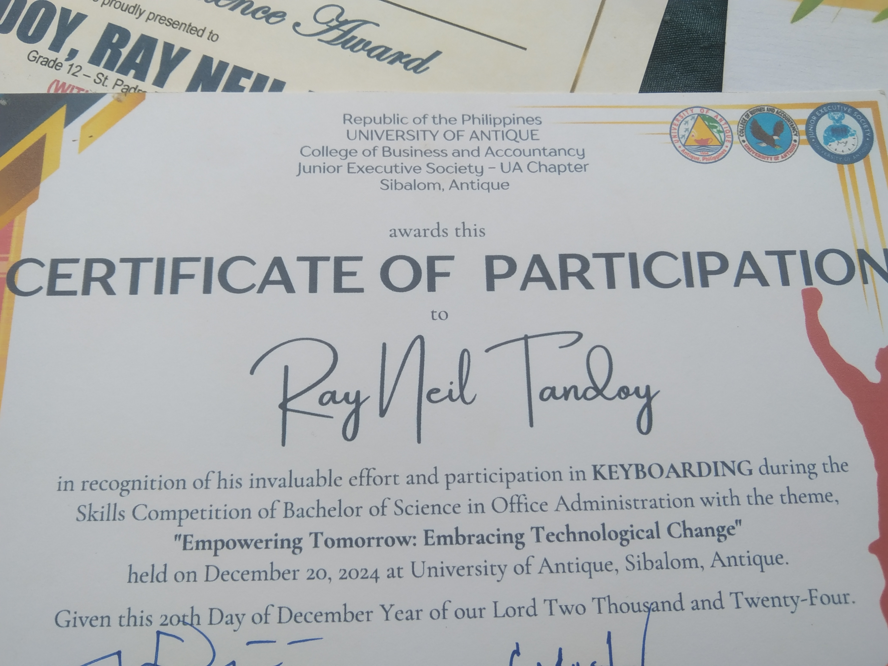
Participated in PASOA skills competition (Keyboarding) under our section, BSOA 1B. I failed to enter the semis but it was a great experience to represent my beloved section.
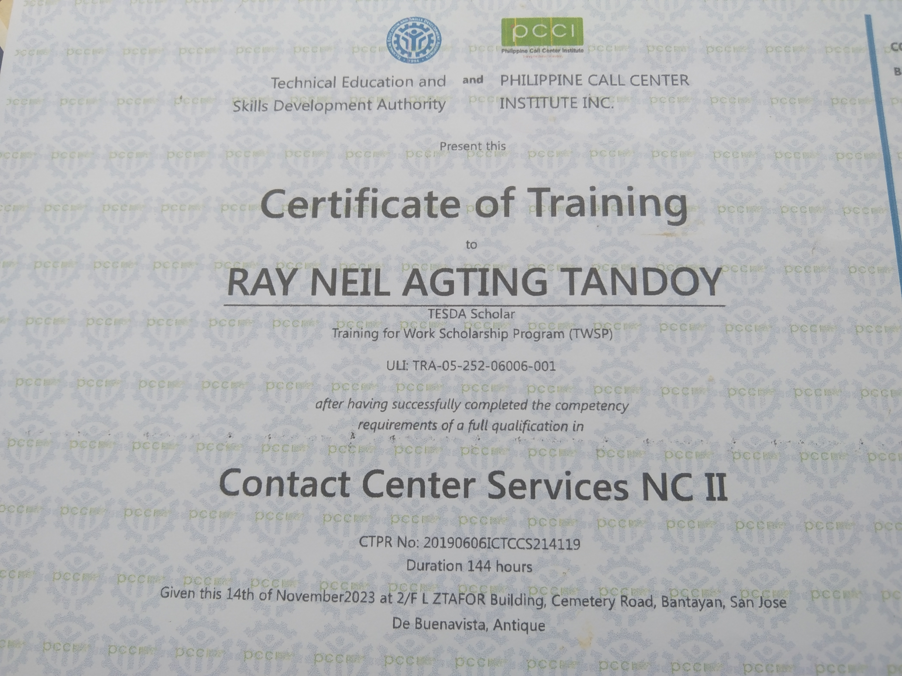
TESDA certification demonstrating competency in customer service and communication skills.
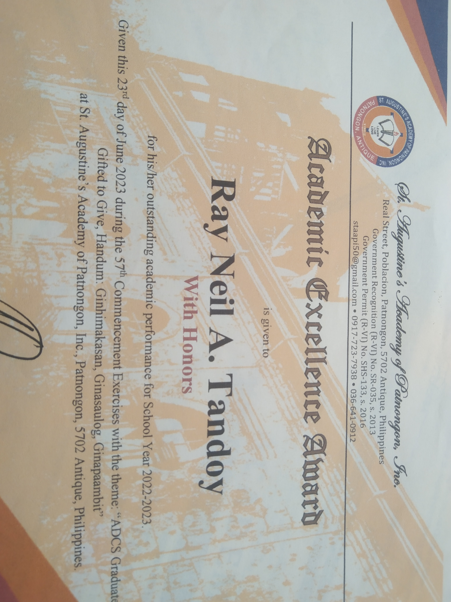
I graduated with honors during my senior highschool. My parents are both proud of me for graduating with an award to hang in our wall.
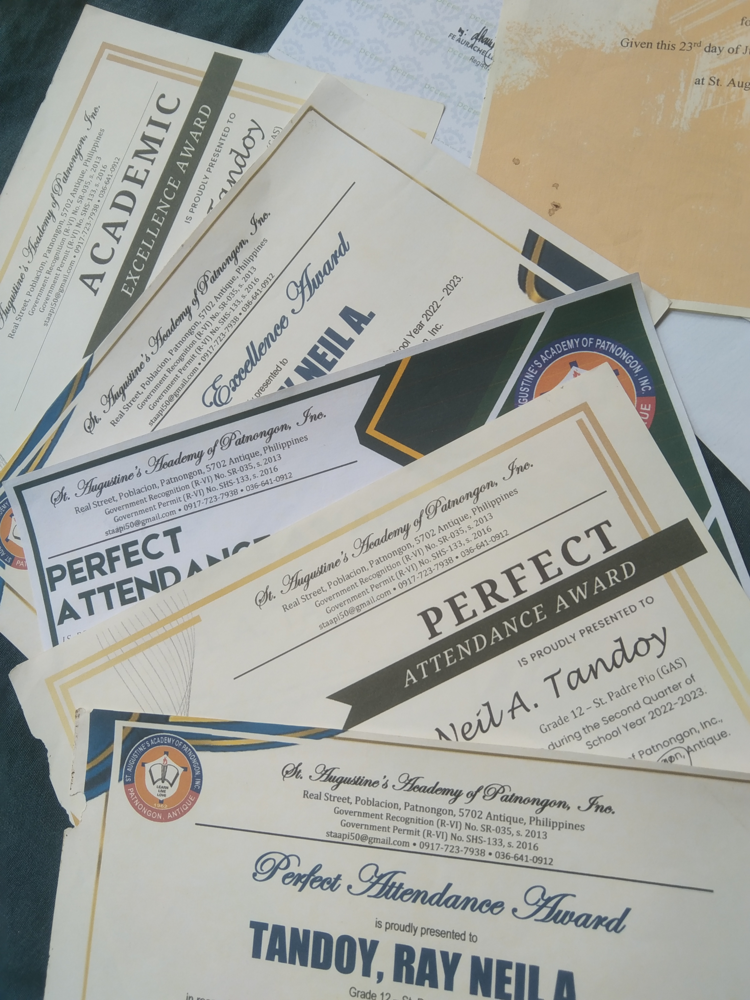
The combination of hardwork and consitency shines through as I ended each semester with a bang!.
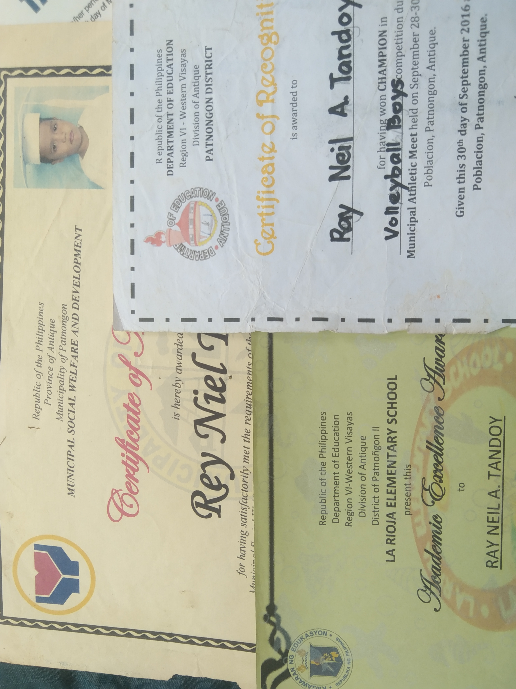
These cute award, as I can remember is a testament of me trying things out of my Comfort Zone. Academic Award, Champion in Municipal Meet - Volleyball, and Representative of Voice Choir.
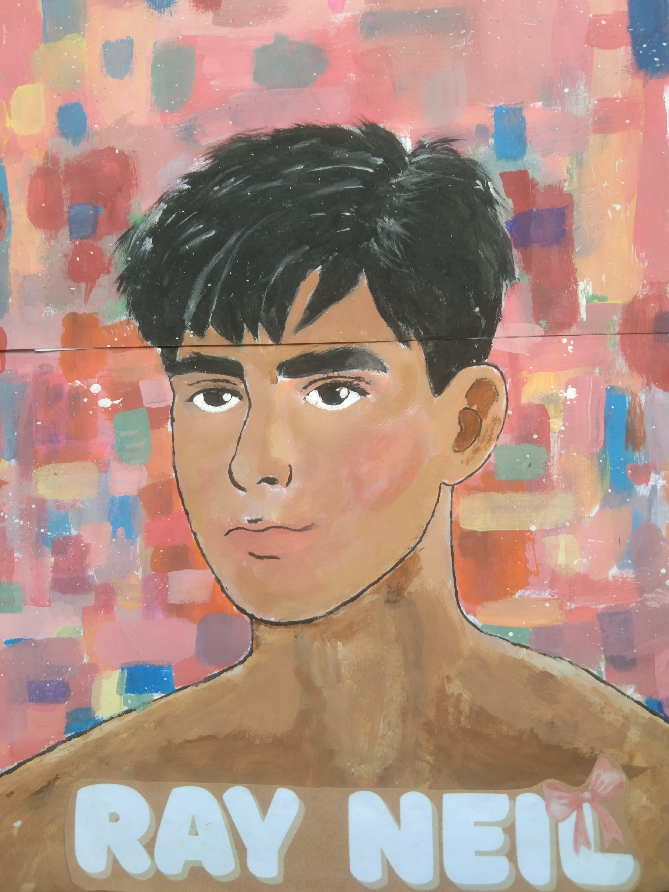
Art was one of my greatest enemy in throughout my life. I was a bit surprised that my weakness can be learned and practice.
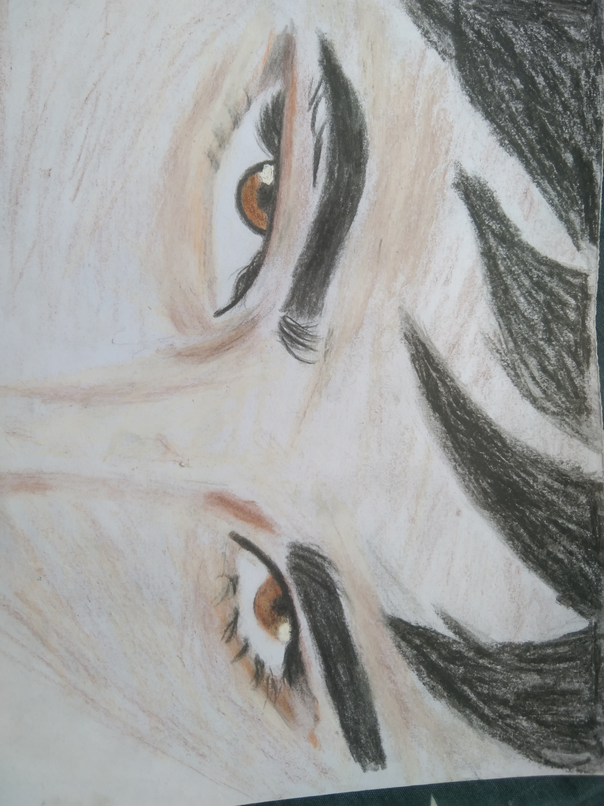
After my first paint, I tried to sketch and color it using KULAI, a filipino colored pencil.